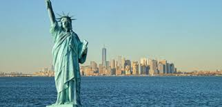

Welcome to New York!
The Statue of Liberty

The Statue of Liberty shows a lady with a book in one hand and a light torch in the other. The statue was made out of metal before, but it is now the color green because of the rust that has been formed on it. This rust has been accumilating for a ong time which has gave it the color green.